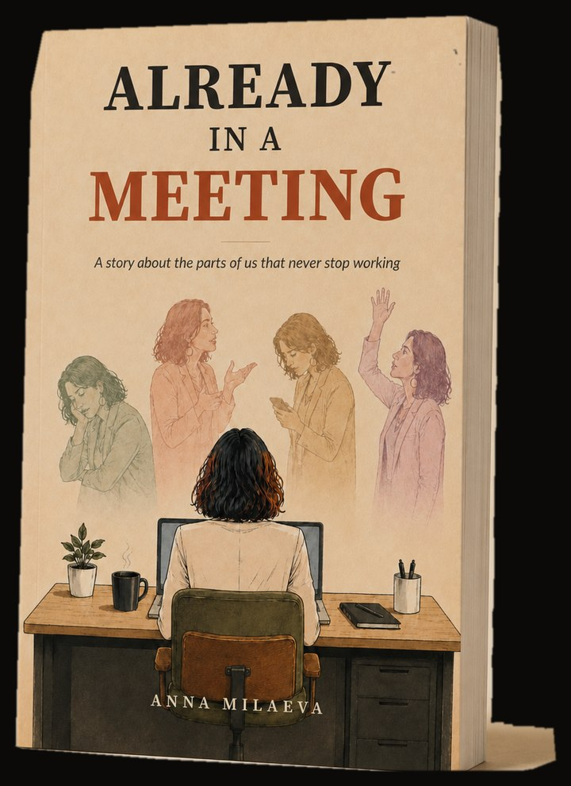

Every team is running two operating systems
One everyone can see. One running inside the people. We work with both.
The map
Two systems, running on top of each other
When they are aligned, things move. When they are not, the outer system has to do all the work alone. It cannot.
Inner operations
What each person is protecting, afraid of, or run by in a given moment. Teams rarely see it on their own. That is the nature of an inner system: it is invisible from the inside.
Outer operations
The processes, the rhythms, the tools, the documents that get written and the meetings that get held. This is the layer most work addresses.
You can start on either side. Or on both.
Inner operations
Working with the people
Internal Family Systems and parts work are the foundation. We coach from everything else we have trained in and lived.
Self-leadership Circles
Your team learns to catch what happens to them when the pressure comes, and to say it before it turns into something else. They work on the situations they are carrying that week.
8 weeks, onlineFrom $600 per personLeadership Coaching
For leaders ready to look at what is driving them. And at what it is costing. Grounded in IFS.
1:1 and groups, onlineFrom $1,500Non-ordinary Offsites
A few days in nature with your team. People come back changed by what they lived through together.
In person, in natureDesigned with youAfter the team coaching we could finally talk about things nobody had said out loud in a long time.
Outer operations
Building the systems
Process, tooling, AI integration, and the things your team touches every day.
Fractional Operations
We find what is costing your team the most time. Then we fix it.
90 days recommendedFrom $4,500 a monthSelf-led AI Integration
We start with your people and the work itself. The tools come last, and only where they earn their place.
Built with your teamFrom $4,500 a monthThe team is grateful for what FINO built. The workflows, the processes, and the time and the billing we got back.
One way in
The Self-leadership Intensive
Half a day with your team. A way to try the work before committing to anything longer. Some teams do this first. Others know what they want and go straight in.
We start with the idea that everyone is in two meetings at once. The one on the calendar, and the one running inside them. People work out what they do when the pressure comes. Then they say it to each other, which for most of them is a first.
It is not heavy. People laugh, and people also say things they have not said before. Your team leaves with language they can use on Monday.
- Half a dayA single session
- Usually onlineIn person when it makes sense
- From $1,500For the session
We expected the usual boring leadership evening. It was one of the best evenings we have had together as a group in a long time.
Inner and outer together
Change is where inner and outer meet
A restructure. A new cadence. A migration. A tool nobody asked for. Every change gets designed on the outer system. Every change lands on the inner one.
An HR manager told us the workflow she had built over fifteen years could be done by AI in ninety seconds. She was right.
She said it like she was telling us about a death. We started with what she was carrying. The tool came later.
AI is leverage. Leverage applied to a healthy team makes the team healthier. Leverage applied to a broken pattern makes the pattern break faster.
Who this is for
Who we work with
We start with a team. A founding group, a department, a leadership layer. Most of the companies we work with have between ten and a hundred people.
Some come because something is stuck. Others come because things are going well and they want to keep it that way.
We take a few clients at a time and we do the work ourselves. It means we know the names of the people on your team, and it means we cannot take everyone.
FINO has worked with government agencies, public health and academic institutions, and employee assistance programs. We are an approved US federal contractor.

The novel
Five colleagues, one company in trouble, and the second meeting that runs inside each person while the first one happens.
Anna Milaeva, who co-founded FINO, wrote it after a decade inside companies like that one. It is fun, and a little too real.
Our team
Deliberately small
The people in the room matter more than the plan. We say the honest thing, and we say it kindly. We stay involved, and when something is not working we say so, including when it is us.

Anna Milaeva
Co-founder- IFS Institute, trained through Level 3
- Certified Deep Transformational Coach
- 10+ years running operations in real estate, fintech, and health tech
- Author of the novel Already In A Meeting
- Works in English, Spanish and Russian

Dario Giuffrida
Co-founder- Organizational psychologist
- IFS practitioner
- Twenty years facilitating groups and building communities
- Musician and songwriter
- Works in English, Spanish, Italian and Portuguese